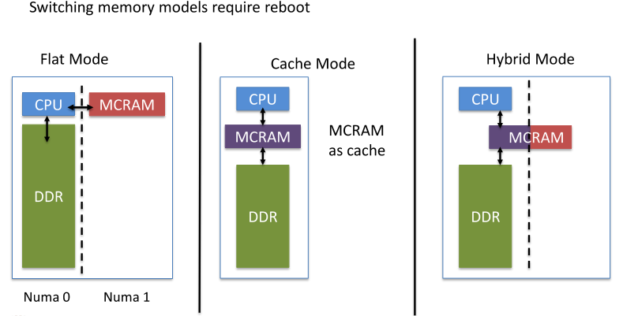

MCRAM in KNL
Created Thursday 25 August 2016
Cluster and Memory modes
It is possible boot a KNL computer with different cluster and memory modes.
The values for knl_memory_mode and knl_cluster_mode are case sensitive. The full list of accepted values:
- knl_memory_mode:
- Cache=00:
- Flat=01:
- Hybrid=02:
- Auto=03
- knl_cluster_mode:
- All2All=00
- SNC-2=01:
- SNC-4=02:
- Hemisphere=03:
- Quadrant=04:
- Auto=05

MCDRAM Usage
How to check the memory my app is using
watch ps -C ./yourbinary u
Cluster Mode=All2All ; (Options: All2All=00: SNC-2=01: SNC-4=02: Hemisphere=03: Quadrant=04: Auto=05 )
Memory Mode=Flat ; (Options: Cache=00: Flat=01: Hybrid=02: Auto=03 )
You may use the Intel high bandwidth memory extentions, Intel FOTRAN FASTMEM
extension, the memkind library or numactl to control usage of MCDRAM.
#include <hbwmalloc.h>
Link with -lmemkind
You can launch an unmodified binary with numactl and place all memory into MCDRAM.
$ numactl -m 1 ./your_binary.exe
Launching within mpirun:
$ mpirun -n 4 numactl -m 1 ./your_binary.exe
For executing under SNC-4, there are four NUMA domains. Domains 0,1,2,3 are
DDR and domains 4,5,6,7 are MCDRAM. An example to bind a single application
to all MCDRAM domains:
$ numactl -m 4,5,6,7 ./your_binary.exe
With MPI to setup each process with a different affinity you use:
$ mpirun -perhost 4 -n 1 numactl --preferred 4 ./your_binary.exe : \
In SNC-4, if you want to use different affinity and run an hybrid MPI-OMP application use the following command
$ mpirun -perhost 4 -n 1 -env KMP_AFFINITY=balanced,granularity=fine numactl --preferred 4 ./your_binary.exe : \
Note: You should be able to assign different thread affinity per MPI process (not tested)
HBWMalloc Caveats (as of 05/20/2016)
HBWmalloc supports 3 policies as described in /usr/include/hbwmalloc.h
By default, HBW_POLICY_PREFERRED = 2 which means that if there is no MCDRAM memory left, memory will be allocated from DRAM.
For HBW_POLICY_PREFERRED = 1 and HBW_POLICY_PREFERRED = 3, if you try to allocate more memory than the MCDRAM provides, you get an error code in return that is accurate when using a single thread. When using multiple thread (lets say you want to allocate 15 GB of MCDRAM memory) no error code is actually returned from the allocation which is inconsistent with the API documentation
NUMA Notes
Depending on the node's configuration, the number of NUMA domains differs.
as a cache for DDR.
In Flat (or Hybrid) mode, the DDR and MCDRAM will be in distinct NUMA domains.
The following command describes the node.
$ numactl -H
available: 2 nodes (0-1)
node 0 cpus: 0 1 2 3 4 5 6 7 8 9 10 11 12 13 14 15 16 17 18 19 20 21 22 23 24 25 26 27 28 29 30 31 32 33 34 35 36 37 38 39 40 41 42 43 44 45 46 47 48 49 50 51 52 53 54 55 56 57 58 59 60 61 62 63 64 65 66 67 68 69 70 71 72 73 74 75 76 77 78 79 80 81 82 83 84 85 86 87 88 89 90 91 92 93 94 95 96 97 98 99 100 101 102 103 104 105 106 107 108 109 110 111 112 113 114 115 116 117 118 119 120 121 122 123 124 125 126 127 128 129 130 131 132 133 134 135 136 137 138 139 140 141 142 143 144 145 146 147 148 149 150 151 152 153 154 155 156 157 158 159 160 161 162 163 164 165 166 167 168 169 170 171 172 173 174 175 176 177 178 179 180 181 182 183 184 185 186 187 188 189 190 191 192 193 194 195 196 197 198 199 200 201 202 203 204 205 206 207 208 209 210 211 212 213 214 215 216 217 218 219 220 221 222 223 224 225 226 227 228 229 230 231 232 233 234 235 236 237 238 239 240 241 242 243 244 245 246 247 248 249 250 251 252 253 254 255
node 1 size: 196512 MB * DDR **
node 0 free: 191010 MB
node 1 cpus:
node 1 size: 16384 MB * MCDRAM **
node 1 free: 15790 MB
node distances:
node 0 1
0: 10 31
1: 31 10
In this case, numactl -m 1 selects binding to MCDRAM. In the SNC-4 model, there will be 8 domains instead of two.
Backlinks: Main:Theta KNL Cray